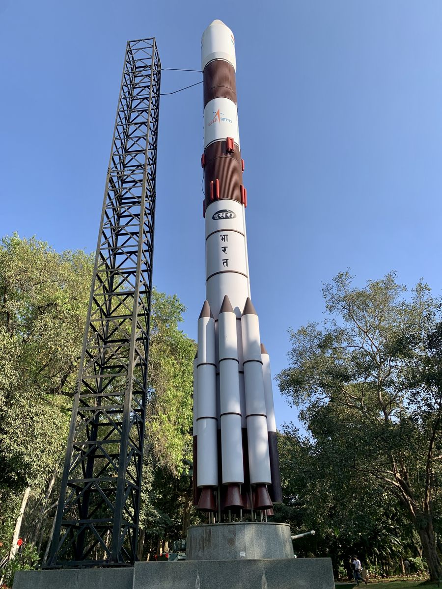

A Índia vira potência de deep tech e espaço, com US$ 1,6 bi em um ano
Nove startups indianas entraram na turma de Pioneiras da Tecnologia de 2026 do Fórum Econômico Mundial, a maioria em espaço e tecnologia de fronteira.

Quando se fala em potência tecnológica, o reflexo é pensar em Estados Unidos e China. Mas um outro nome vem subindo rápido e com pouca cobertura por aqui: a Índia. Na lista de Pioneiras da Tecnologia de 2026 do Fórum Econômico Mundial, nove das empresas selecionadas são indianas, a maioria em espaço e deep tech, o termo para tecnologias de fronteira baseadas em ciência dura.
O número não é acaso. As startups indianas de deep tech atraíram US$ 1,6 bilhão em capital de risco em 2025, uma alta de 78% em relação a 2023. É dinheiro entrando justamente na parte mais difícil e cara da inovação: foguetes, satélites, novos materiais, biologia, hardware. A área onde, historicamente, países emergentes tinham dificuldade de competir por falta de capital paciente.
O movimento indiano se encaixa numa tendência global apontada pelo próprio Fórum: o investimento em deep tech está disparando, a inteligência artificial já responde por mais de 60% de todo o capital de risco do mundo, e as fronteiras entre software, hardware, energia e biologia estão cada vez mais borradas. A turma de 2026 reúne empresas de 23 países, sinal de que a inovação de ponta está se espalhando para além dos suspeitos de sempre.
Por que isso importa no Brasil
A Índia é o espelho mais útil que o Brasil tem: outro país populoso do Sul Global, com mercado interno gigante e a mesma ambição de subir na cadeia de valor da tecnologia. A diferença que salta aos olhos é o capital chegando à ciência dura e ao espaço, e regras que ajudaram a destravar isso. O Brasil tem base científica, um programa espacial e uma cena de startups em crescimento, mas ainda esbarra em financiamento para deep tech. A trajetória indiana mostra que a virada é possível, e o que costuma acelerá-la: dinheiro de risco disposto a esperar e um Estado que reduz o atrito regulatório.
Gostou? Receba as próximas.
As notícias internacionais que importam, em português, uma vez por semana.
Assinar a newsletter